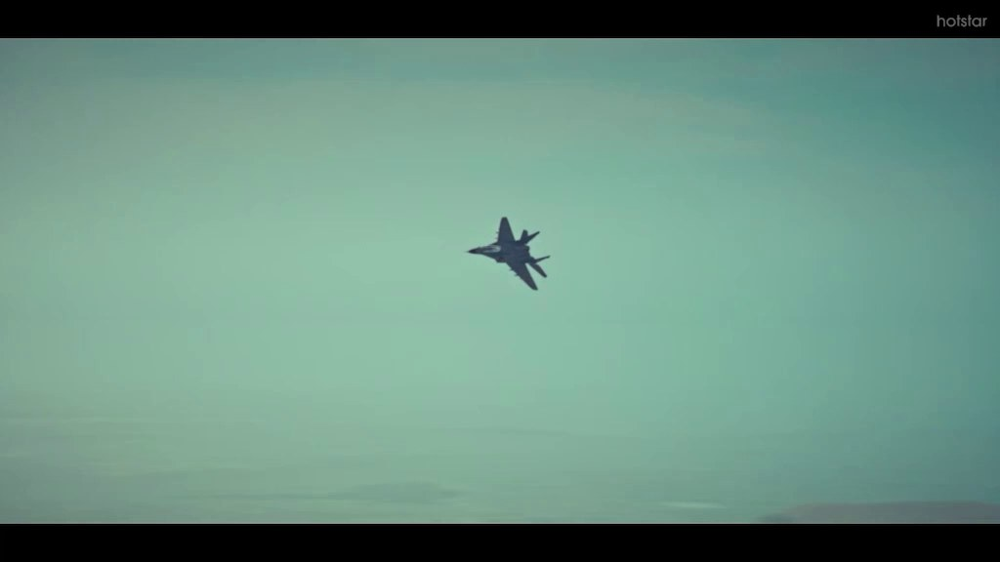
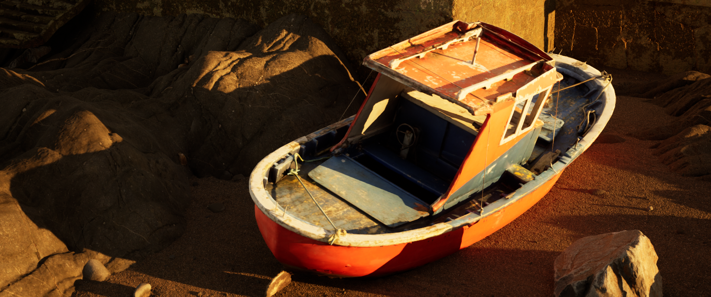
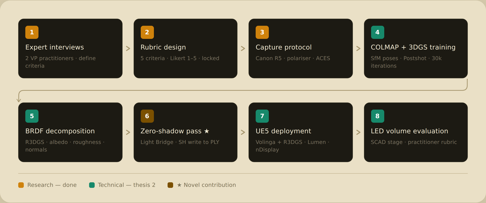

Bhanu Singh
I build worlds two ways — behind a game engine and behind a camera. MFA candidate in Game Design (ITGM) at SCAD, Unreal Engine artist, and virtual production generalist who has cut cinematic shots for network television and rendered his own ancestral home just to see it stand again.
Most of what I do starts as a loose idea — a shot, a mechanic, a "what if this existed." Getting it on screen is really just problem-solving: the rig that has to move a certain way, the lighting setup that has to sell a mood, the pipeline that turns a sketch into something playable. That's the part I actually like.
See the workSelected work
All projects
01 / Broadcast
Disney+ Hotstar — Shoorveer
Unreal Engine cinematic & virtual production work for India's first Unreal-produced TV show.

02 / Personal
Unreal Environments
A run of lighting-first cinematic studies — from a Baby Driver recreation to a Mughal-architecture dreamscape.
03 / Hard-surface
3D Modeling an Aircraft
An F-22 Raptor built in Maya from blueprints, textured in Substance, rendered over real terrain in UE5.
Also, an ongoing thesis
All research
00 / MFA Thesis — Ongoing, Sprint 1 of 3
From Capture to Cut
A relightable 3D Gaussian Splatting pipeline for virtual production on LED volume stages — built and tested with a real practitioner interview behind the evaluation rubric.
Two crafts, one process
Game design is where I learned to think in systems — what has to be true for a player to actually care. Filmmaking is where I learned to point a camera at something and make it land. Virtual production is where those two crafts collapse into one job: block a scene, light it, shoot it — all inside a game engine instead of on a soundstage.